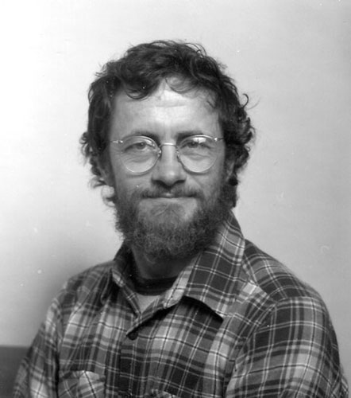

Russel Yuristy was born in Goodeve, Saskatchewan. He recieved a Bachelor of Arts degree from the University of Saskatchewan, and later a Masters of Science in Art from the University of Wisconsin. He has become known for designing playground structures for parks in various cities (he has playground structures in Ottawa, Spokane, Churchill, Swift Current, Saskatoon, Vancover and Regina), but he works in a variety of other formats/mediums as well. He is now teaching printmaking at the Ottawa School of Art.
